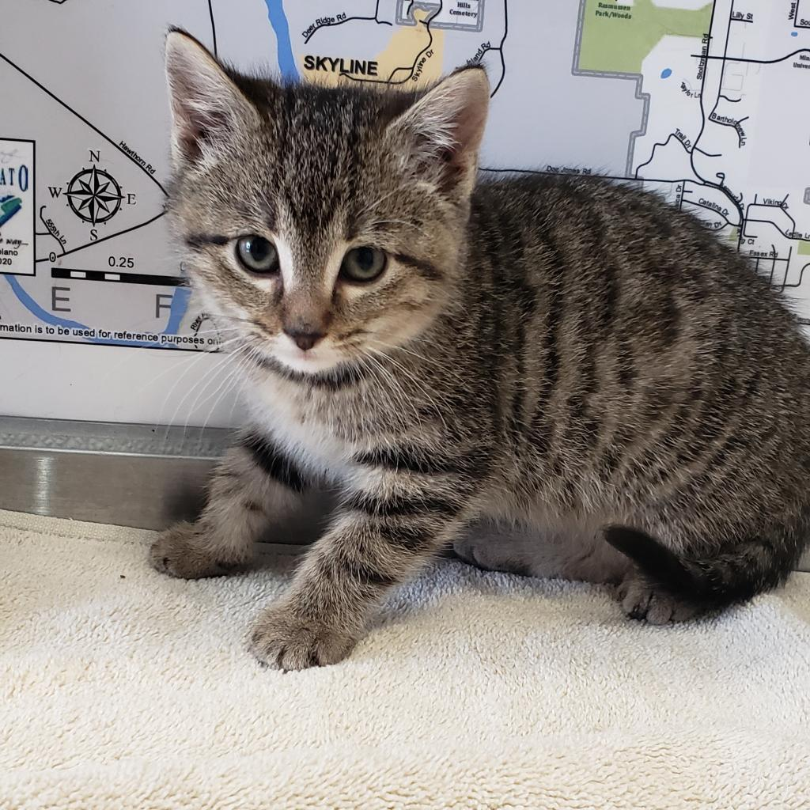
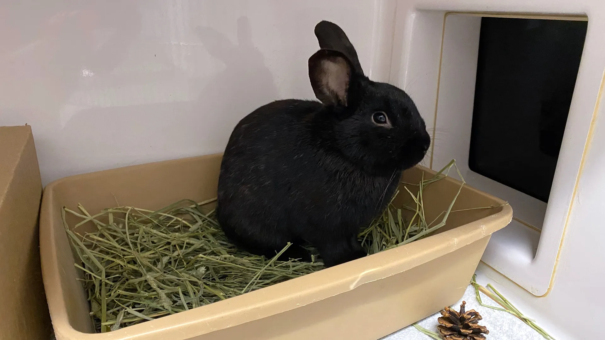

Adopt Pets and Save Them
-

Adopt a Dog
A Greatful Heart Forever
-

Adopt a Cat
A Peaceful Member for your Family
-

Search for a Different Friend
A Lot of Varities to Choose
At Care paws, we are dedicated to giving every animal a second chance at finding a loving home.
Our mission is to rescue, rehabilitate, and rehome pets in need, providing them with the care and compassion they deserve.
With a team of passionate volunteers and foster families, we work tirelessly to ensure that every pet receives the love, attention, and medical care they require.
Together, we strive to make a positive impact on the lives of animals and the families who adopt them.
Join us in our mission to save lives and create forever homes for pets in need.